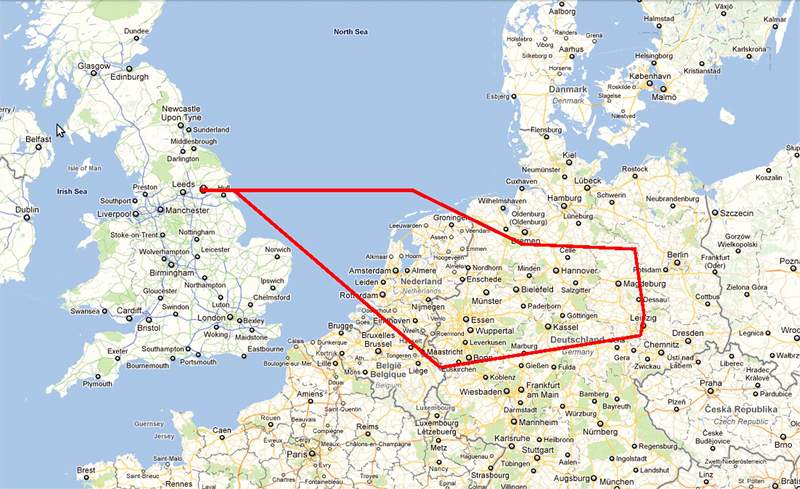
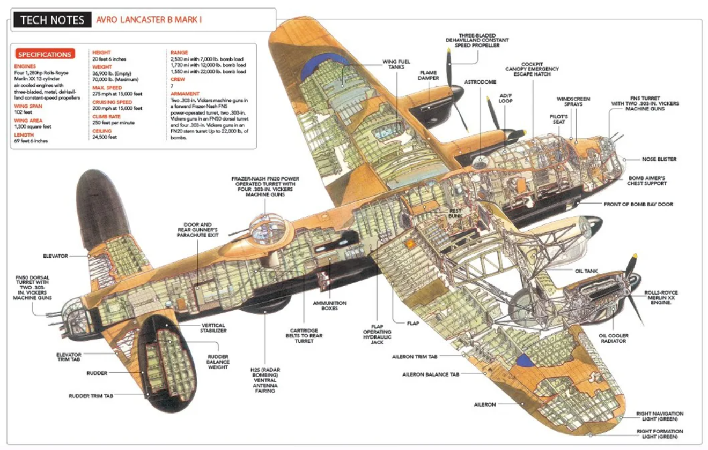
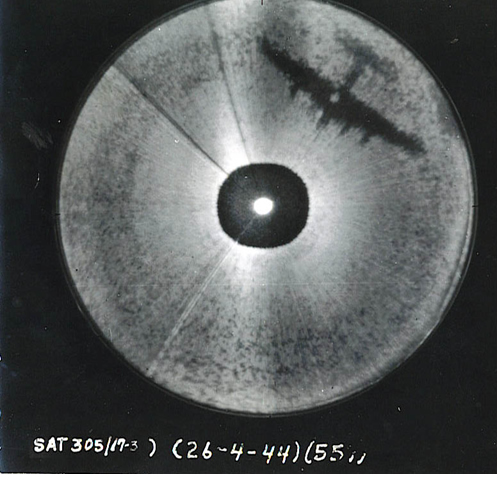
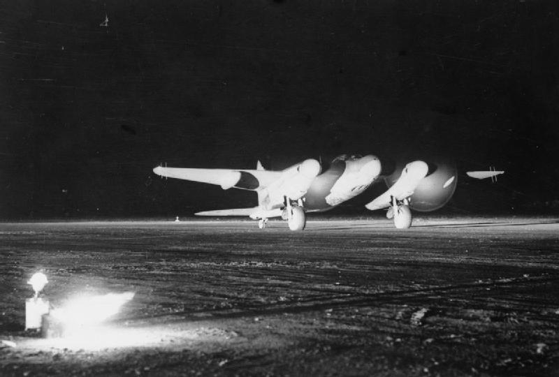
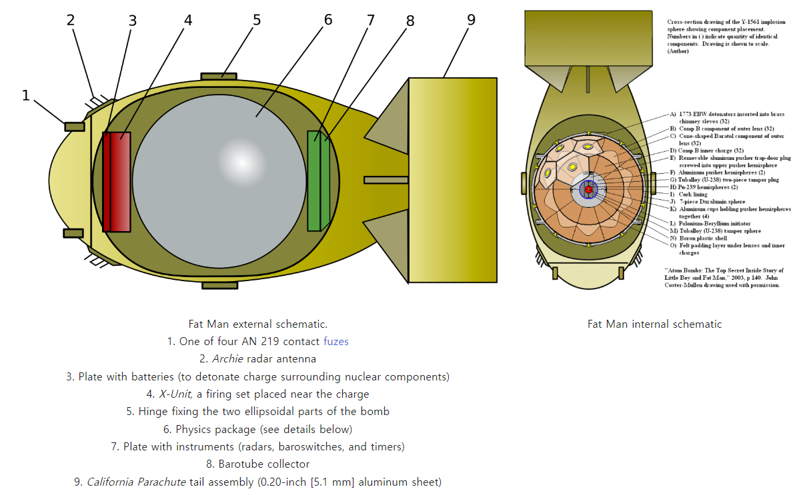
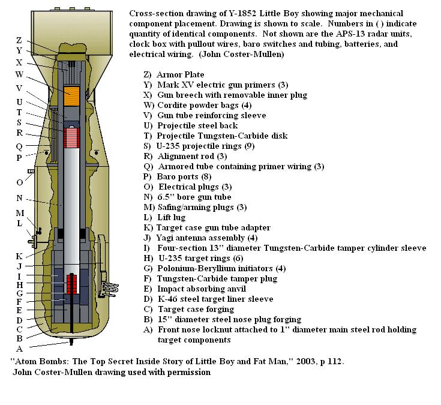

레이더 개발 이야기 (46) - 핵폭탄을 터뜨린 레이더
게시: 2023-09-07T06:30:20+09:00
<여름이 싫었던 로열 에어포스> 노든 폭탄 조준경의 위력을 확신하고 있던 미육군 제8 항공단이 막대한 피해를 입으면서도 주간 폭격을 고집한 것에 비해 로열 에어포스가 (실은 폭탄이 목표물에 명중하는 일이 거의 없다는 것을 알면서도) 야간 폭격을 고수한 이뉴는 딱 하나, 독일 전투기들이 무서웠기 떄문. 1943년 봄, 로열 에어포스의 폭격기 사령부는 걱정이 점점 커지고 있었음. 독일도 레이더 기술과 그를 이용한 요격 기술이 점점 좋아지면서 독일 야간 전투기들이 깜깜한 밤중에 영국 폭격기를 격추시키는 일이 점점 늘어나고 있었기 때문. 비록 아직 전체 출격 대수의 4% 정도만 그렇게 요격되어 격추되었지만 그 비율이 점점 늘어나고 있다는 것이 문제였음. 게다가 이제 곧 다시 여름이 됨. 여름이 되면 그만큼 해가 길어질 것이고, 그건 그만큼 영국 폭격기들이 숨어들 어둠의 기간이 줄어든다는 뜻.

(1944년 2월 19일 밤 이루어진, 요크셔 지방의 기지에서 이륙하여 라이프치히 폭격에 참여한 영국 폭격기의 비행 경로. 방공망을 피하고 교란하기 위해 최단거리 항로를 이용하지 않았으므로, 한번 비행에 7~8시간이 걸리기도 했음.) 야간 비행의 좋은 점은 적의 야간 전투기가 영국 폭격기를 볼 수 없다는 것이었지만, 나쁜 점은 영국 폭격기의 기총수도 독일 야간 전투기를 볼 수가 없다는 것. 특히 독일 야간 전투기는 레이더를 이용하여 영국 폭격기의 대략적인 위치를 파악하면, 폭격기의 뒤쪽 아래 방향에서 슬그머니 접근하여 공격하는 경우가 많았음. 이유는 미군의 B-17과는 달리 영국 폭격기에는 동체 아래 복부 부분에는 방어 기총이 달려있지 않았고, 또 약간 아래에서 올려다 봐야 달빛이 은은하게 비치는 밤하늘을 배경으로 폭격기가 잘 보였기 때문. 그래서 일단 그 위치까지 따라 잡히면 영국 폭격기는 속절없이 아무런 저항도 못 해보고 격추당하기 일쑤.

(로열 에어포스의 주력 폭격기 Avro Lancaster. 보시다시피 배쪽에는 아예 방어용 기관총좌가 없음. 미국이 자랑하는 B-17 폭격기보다 더 우수한 폭장량과 성능을 자랑한다고 하지만 랭카스터가 B-17보다 더 많은 폭탄을 싣고도 빠르게 날 수 있던 이유는 그냥 방어용 기총과 탄약을 뺐기 때문. B-17의 경우 탑재량의 1/3 정도가 기관총과 그 탄약의 무게였다고.) 이런 문제를 해결해보고자 로열 에어포스는 레이더를 이용한 몇 가지 기술을 연구개발하고 있었음. 바로 Monica 레이더와 AGLT (Automatic Gun-Laying Turret - 자동 조준 기관포). 그러나 둘 다 지지부진 했음. AGLT는 기술적으로 매우 복잡하여 개발 속도 자체가 느렸고, 모니카 레이더는 아직 cavity magnetron를 이용한 GHz 주파수가 아니라 MHz 주파수를 이용하던 초기 공대공 레이더 AI (Airborne Interception) Mk IV를 간략하게 개조한 것에 불과했기 때문. (전에 이미 언급했듯이) 나중에 알려졌지만 이 별 도움 안 되던 Monica 레이더는 오히려 독일 야간 전투기들이 그 MHz 단위의 레이더 전파를 쉽게 역추적하여 영국 폭격기의 위치를 알려주는 역적 노릇만 했음. 1943년 4월 18일, 폭격기 사령부와 레이더 연구팀 사이의 연락 장교 역할을 하던 새워드(Dudley Saward) 중령은 H2S 개발을 지휘하던 로벨(Bernard Lovell)을 만나 진행 상황을 확인. 특히 바로 하루 전인 4월 17일 새벽, 체코 보헤미아의 스코다(Skoda) 공장을 폭격하러 갔던 폭격 비행대가 무려 11.3%라는 참혹한 손실을 입은 직후라서 분위기는 좋지 않았음. 새워드는 로벨에게 이렇게 통탄. "개발 중인 모니카 레이더 등을 개선할 방법이 뭐 없을까요? H2S가 우리 폭격기 아래의 지형은 잘 보여주면서도 폭격기 주변의 비행기는 보여주지 못한다니 참 아쉬운 일입니다." 그런데 그 말을 듣고 로벨은 속으로 움찔했음. 실은 전에 언급한 center-zero, 즉 지상에 부딪혀 오는 반사파로 인해 PPI 레이더 스코프 한복판이 허옇게 나오는 부분에 대해 들은 이야기가 있었기 때문. H2S는 장거리를 봐야 하는 지형 탐지 레이더였고, 그래서 레이더 운용사는 레이더 반사파 스캔의 시간을 조절하는 다이얼을 조절하여 center-zero를 전체 화면에서 될 수 있는 대로 작게 만들려고 노력했음. 그런데 그렇게 center-zero를 크고 선명한 상태에서 작고 흐릿한 상태로 변경하는 과정에서, 몇몇 레이더 운용사는 그 허연 center-zero 안에서 뭔가 점들이 몇 개 보이는 현상을 보고했던 것. 별로 중요한 일이 아니라서 사람들은 크게 관심을 두지 않았으나, 그게 뭘까 생각해본 사람들은 틀림없이 같은 편대 내에서 함께 날고 있는 같은 편대의 다른 폭격기들의 이미지일 것이라고 판단. 이 모든 것은 H2S가 Monica 레이더와는 달리 GHz의 고주파를 썼기 때문에 가능했던 것인데, 새워드의 말을 들은 로벨은 바로 그 생각을 한 것. 결국 로벨의 팀에서는 기존 H2S를 하나도 손보지 않고 그저 별도의 PPI display만 추가로 마련하여 중앙의 그 센터-제로 부분만 커다랗게 전체 화면을 채우도록 조치. 시험 삼아 테스트용 Halifax 폭격기 밑에 모스키토 경폭격기를 띄워보니 매우 흡족스럽게 잘 보임. 이 간단한 응용 조치는 곧 Fishpond (양어장)이라는 암호명으로 지정되어 4개월 만에 양산에 들어갔고, 6개월 뒤인 10월에는 실전에 배치됨.

(이건 사실 Fishpond, 즉 H2S에 잡힌 이미지가 아니라 더 이후에 개발된 H2X 레이더의 scope에 잡힌 B-17의 모습. 3 GHz 전파를 이용하던 H2S에 비해 H2X는 10 GHz 전파를 사용하여 훨씬 더 선명한 해상도의 이미지를 얻을 수 있었고, 그래서 이런 선명한 그림까지도 나오게 된 것.)
사용법은 매우 간단. 이 센터-제로 구역만 보여주는 디스플레이는 항법사가 아니라 무전사 앞에 놓여졌고, 무전사의 눈에는 자신의 뒤를 질서정연하게 따라오는 같은 편대 내의 다른 폭격기들만 점으로 보였음. 그러다 갑자기 외부에서 다른 점이 빗겨날아들어와 좌우로 흔들거리면서 따라오면 그건 독일 야간 전투기라고 쉽게 판단할 수 있었음. 그런 것이 보일 경우 독일 야간 전투기가 완전히 따라붙기 전에 급선회하여 독일 전투기를 떨어내도록 조종사에게 지시. 이런 조치만으로도 영국 폭격기의 피해가 상당히 줄어들었다고. <Monica 레이더의 활약은 계속된다 - 히로시마와 나가사키까지> 전에 언급했듯이 MHz 단위의 전파를 썼기 때문에 별로 큰 도움이 되지 않던 Monica 레이더는 그나마 1944년 여름 이후 사용이 중단됨. 가장 큰 이유는 1944년 7월 독일 야간 전투기 Ju-88G 한 대가 방향을 착각하고 영국 공군 기지에 착륙하는 어처구니 없는 사건이 벌어졌을 때, 그 야간 전투기 조종사를 취조한 결과 독일은 H2S의 GHz 전파는 추적 못해도 Monica의 MHz 전파는 추적하는 장치, 즉 Flensburg 수신기를 갖추고 있다는 것이 밝혀졌기 때문. 그러나 영국 공군도 생각을 해보니 독일이 Monica 레이더 전파를 추적한다는 것을 영국이 안다는 사실 자체가 영국에게는 큰 자산이 될 수 있었음. 그래서 실제 폭격 임무를 띈 폭격기에서는 모니카 레이더를 모두 제거하되, 그걸 영국의 야간 전투기 모스키토에 붙여놓고 전파를 마구 쏘아대며 유럽 밤하늘을 날아다녔음. 그러면 그 전파에 이끌려 독일 야간 전투기들이 불나방처럼 날아듬. Monica 레이더는 그저 미끼일 뿐, 이제 GHz 단위의 전파를 쏘는 공대공 레이더 AI Mk XVII을 장착하고 있던 모스키토 전투기는 그렇게 낚은 독일 야간 전투기가 다가오면 모스키토 특유의 우월한 기동성을 자랑하며 360도 회전하며 손쉽게 사냥. 거추장스러운 사슴뿔 안테나를 달고 나느라 움직임이 둔했던 독일 야간 전투기들은 상대가 되지 못함.

(이탈리아 Foggia의 비행장에서 야간 비행을 위해 이륙하는 de Havilland Mosquito 야간 전투기. 폭격기 버전과는 조금 달리 뭉툭한 코, 즉 'bull nose'를 가지고 있는 것이 보이는데, 이유는 속에 AI Mk. XVII을 장착하고 있기 때문.) Monica 레이더는 그 이후에도 이런저런 활용도를 찾아내어 계속 사용됨. 심지어 히로시마와 나가사키의 핵폭격에도 사용됨. 그때 투하된 핵폭탄은 지상 5백 m에서 공중폭발하도록 세팅되었는데, 폭탄이 자신의 고도를 어떻게 알겠음? 바로 레이더. 이 핵폭탄들에는 AN/APS-13 레이더가 달려 있었는데, 이것이 모니카 레이더의 미군 제식 명칭. 미군은 이 레이더를 radar altimeter, 즉 전파 고도계로 fatman에 장착했던 것.

(나가사키에 투하된 Fat Man의 구조도. 2번에 보이는 안테나가 Archie 레이더 안테나. Archie란 바로 AN/APS-13의 별명이었고, AN/APS-13는 영국에서 설계한 Monica 레이더를 미국에서 생산하며 붙인 이름.)

(히로시마에 투하된 Little Boy의 구조. 여기에도 AN/APS-13 레이더가 고도계로서 장착되어 있었지만 이 그림에는 표시되지 않았음. 미군은 이 폭탄 투하를 계획하면서 여러가지 안전장치를 두었음. 가령 radar 고도계도 이중으로 장착했을 뿐만 아니라, 별도로 기압계도 장착해서 고도가 1100m가 되어야 비로소 radar 고도계에 전원이 들어가도록 조치. 제일 감동적인 부분은 바다에 추락하면 핵폭발 염려는 없지만 무슨무슨 화학 반응 때문에 방사능이 새어나와 해양을 오염시킬 수 있으니, 조종사에게는 혹시 불시착하게 되더라도 가급적 바다 말고 육지에 불시착하라는 지시가 주어졌다고.)